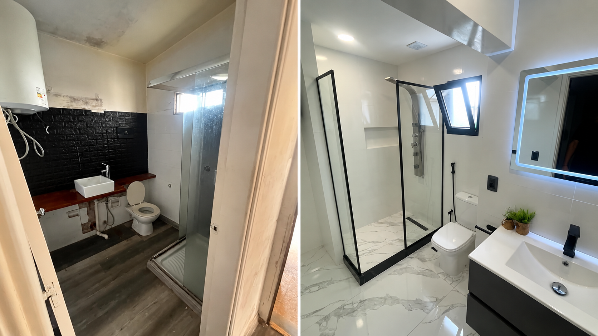
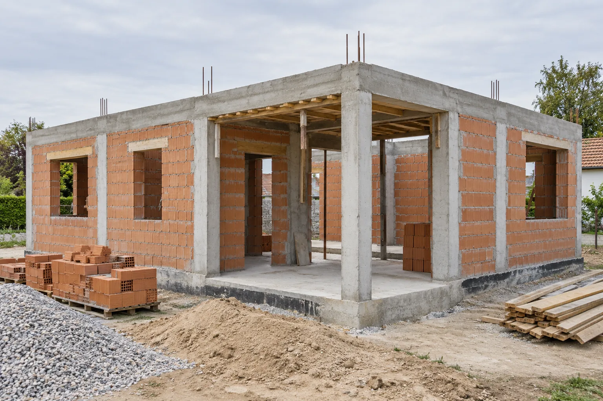
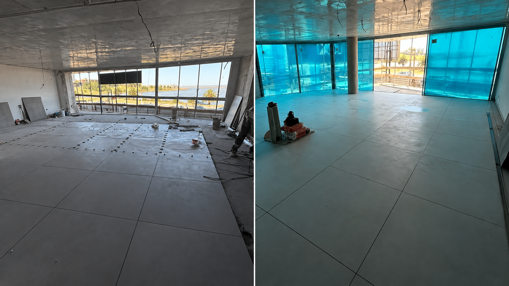

Qué hacemos
Descripciones provisionales para revisión editorial.
Servicio
Reformas integrales
Una reforma parte de una nueva manera de habitar un espacio. Su distribución, sus usos y su estado ayudan a definir qué se quiere transformar.

Servicio
Construcción
Cada construcción comienza con una idea de espacio y de uso. Definir las necesidades del proyecto da contexto a las decisiones de la obra.

Servicio
Finalización de obras
La etapa final reúne los detalles pendientes de una obra. Identificar qué falta completar ayuda a ordenar el cierre del proyecto.

Servicio
Mantenimiento
El uso cotidiano de un espacio trae necesidades de cuidado. Observar su estado permite reconocer los puntos que requieren atención.